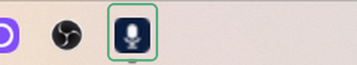

Run the file you downloaded
It is a single file, CoconutWhisper.exe. There is no installer, so just double click it.
Windows will probably say it cannot verify the publisher. Click More info, then Run anyway. That warning appears for any program without a paid certificate.
Find the microphone icon
The app has no window. It sits near the clock, at the bottom right of your screen.

This is the icon you are looking for.
Wait for it to be ready
The first launch downloads the speech model, which takes a few minutes on a normal connection. It only happens once, and after that the app works offline.
Hover the icon to see what it is doing. While it says loading, the key will not work yet.
Click where you want to write, then hold the key
Click into the message box first, in Slack, Gmail, the ATS, anywhere. Then hold Right Ctrl and talk.

This pill appears at the bottom of the screen while it hears you.
Let go of the key when you finish. A second or two later your text appears where the cursor was, punctuation included.
The menu
Right click the microphone icon to open it.
The first line is not clickable, it just tells you the current state.
Switching language takes effect immediately, no restart. Leave it on auto detect if you move between English and Portuguese during the day.
Settings, if you want to change the key
Right click the icon and choose Settings.

The keys you can choose from:
Under Mode you can swap holding the key for pressing it once to start and once to stop, which is easier for long dictation.
Sound volume sets how loud the start and stop tones are. It starts quiet, and the Test button plays it so you can find your level.
Word replacements is for words it always gets wrong. One per line, written as spoken = written, useful for client names and internal shorthand.